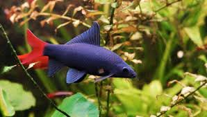

Conhecendo mais sobre o Labeo Bicolor
Apesar de ser considerado extinto na natureza pelo IUCN, é criado largamente em cativeiro para abastecer o mercado de aquarismo. Ocorre no continente asiático na bacia Chao Phraya, Tailândia, em rios de água barrenta, comumente entre troncos e rochas. Podem frequentar várzeas ou florestas inundadas sazonalmente durante estação chuvosa. Devido este padrão migratório, acredita-se que sua extinção em seu ambiente natural ocorra prejudicado pelo desenvolvimento humano (vide barragens e represas).
